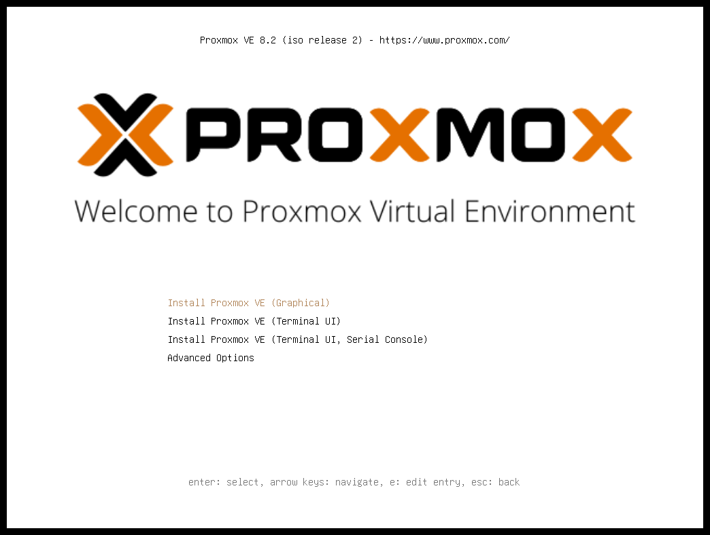
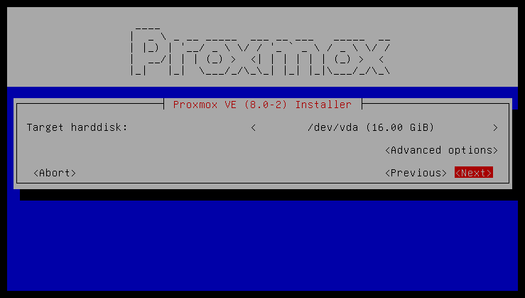
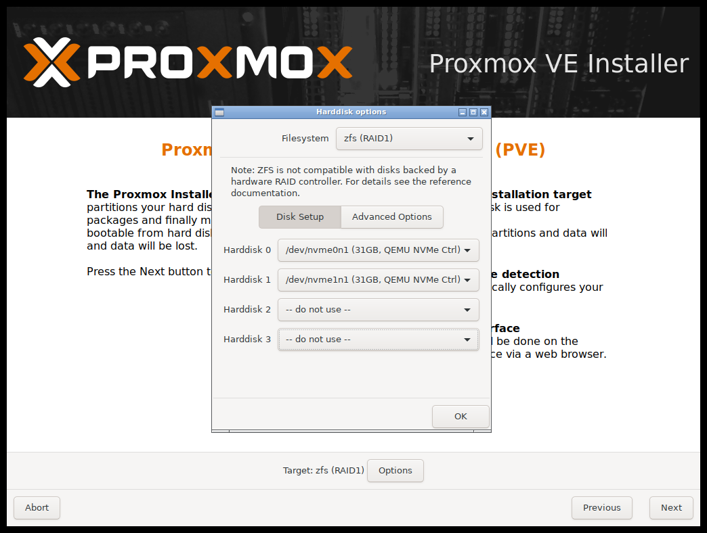
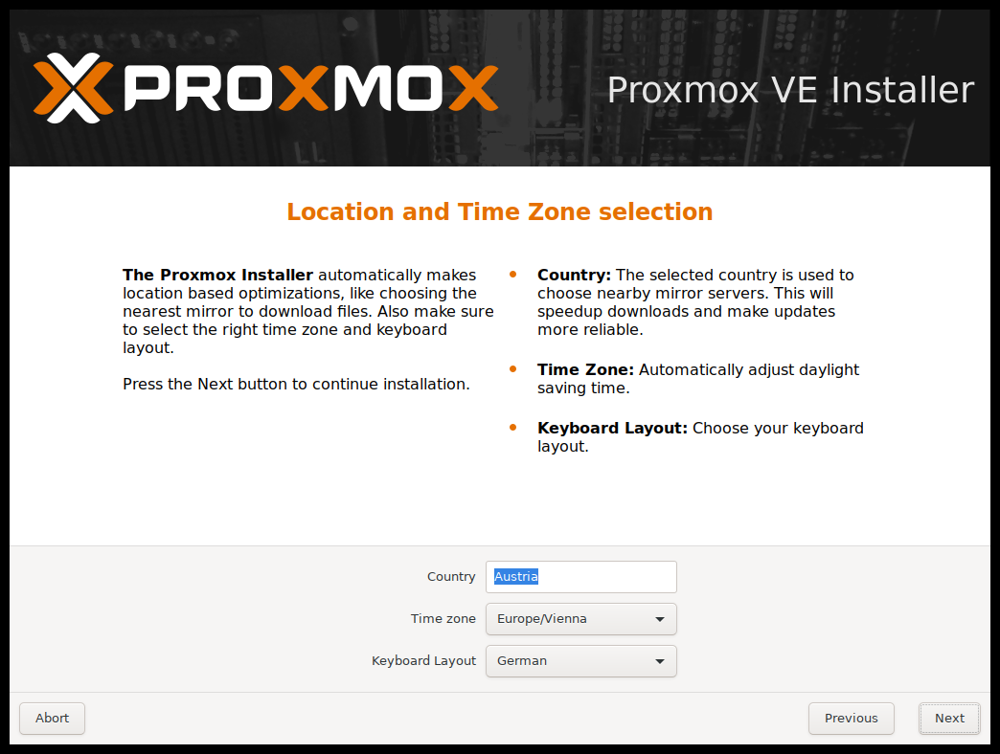
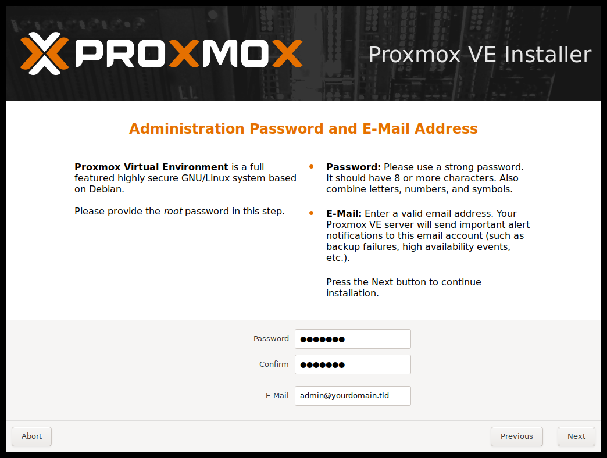
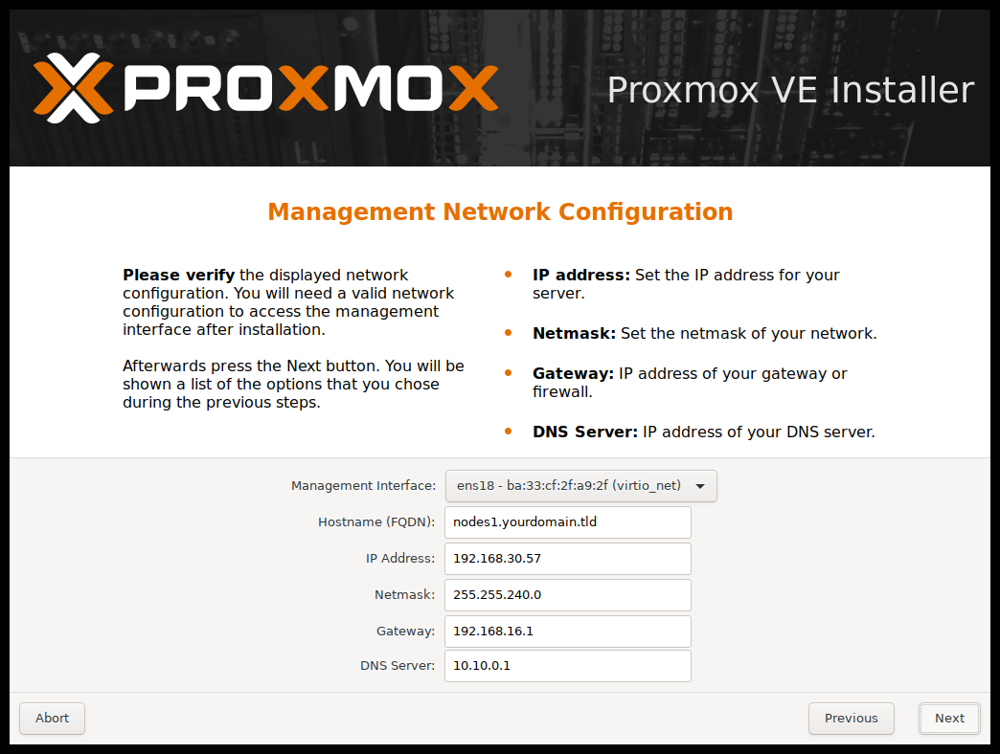
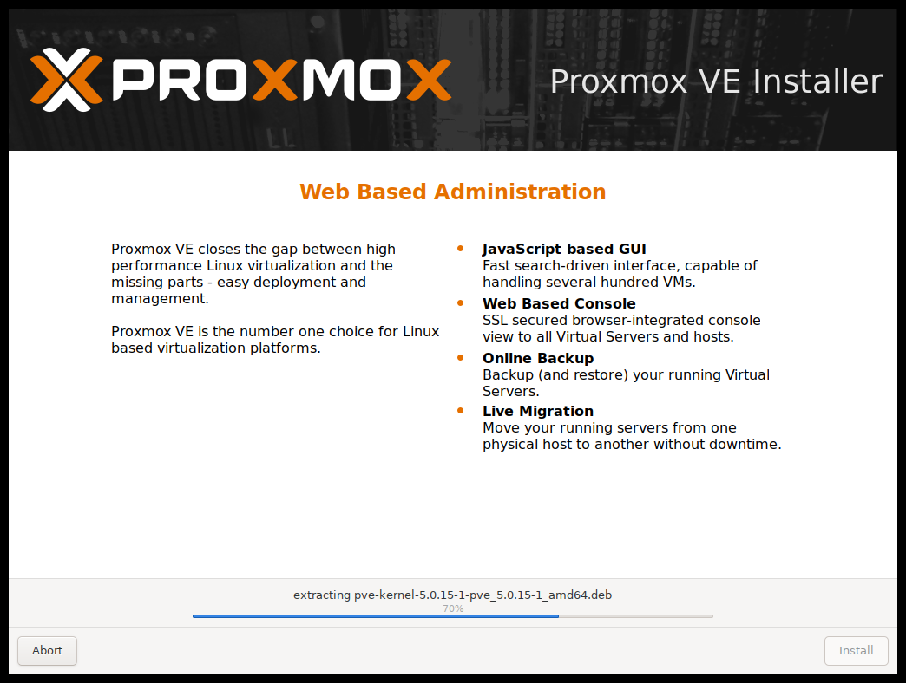
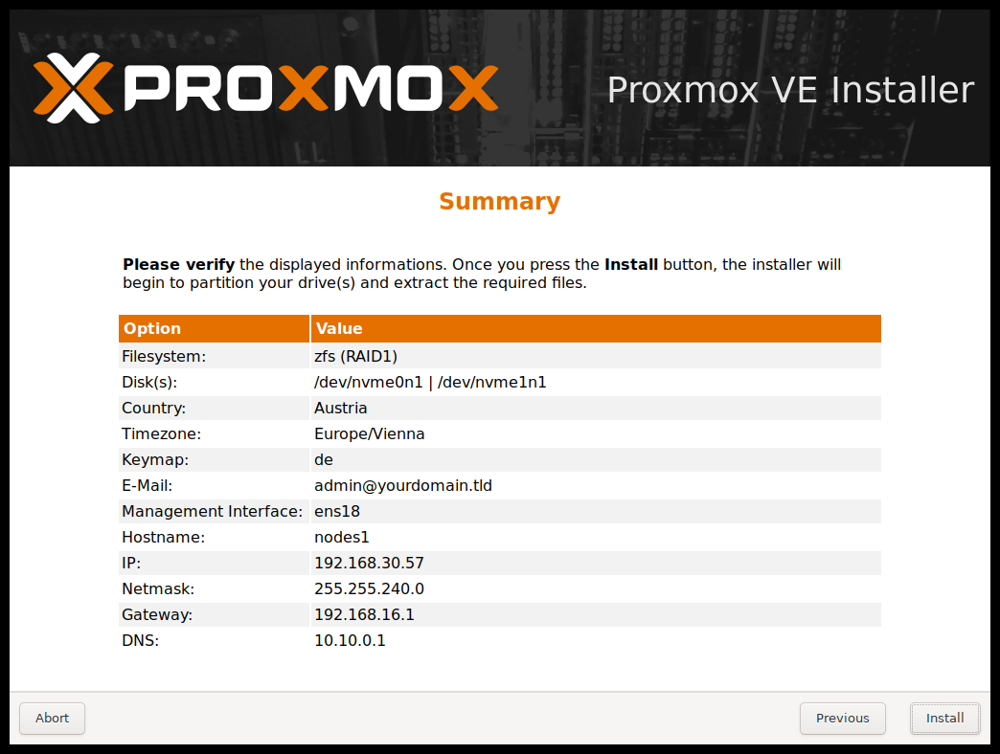

The installer ISO image includes the following:
- Complete operating system (Debian Linux, 64-bit)
- The Proxmox VE installer, which partitions the local disk(s) with ext4, XFS, BTRFS (technology preview), or ZFS and installs the operating system
- Proxmox VE Linux kernel with KVM and LXC support
- Complete toolset for administering virtual machines, containers, the host system, clusters and all necessary resources
- Web-based management interface
Note
All existing data on the selected drives will be removed during the installation process. The installer does not add boot menu entries for other operating systems.
Please insert the prepared installation media (for example, USB flash drive or CD-ROM) and boot from it.
Tip
Make sure that booting from the installation medium (for example, USB) is enabled in your server’s firmware settings. Secure boot needs to be disabled when booting an installer prior to Proxmox VE version 8.1.

After choosing the correct entry (for example, Boot from USB) the Proxmox VE menu will be displayed, and one of the following options can be selected:
- Install Proxmox VE (Graphical)
- Starts the normal installation.
Tip
It’s possible to use the installation wizard with a keyboard only. Buttons
can be clicked by pressing the ALT key combined with the underlined character
from the respective button. For example, ALT + N to press a Next button.
- Install Proxmox VE (Terminal UI)
- Starts the terminal-mode installation wizard. It provides the same overall installation experience as the graphical installer, but has generally better compatibility with very old and very new hardware.
- Install Proxmox VE (Terminal UI, Serial Console)
- Starts the terminal-mode installation wizard, additionally setting up the Linux kernel to use the (first) serial port of the machine for in- and output. This can be used if the machine is completely headless and only has a serial console available.

Both modes use the same code base for the actual installation process to benefit from more than a decade of bug fixes and ensure feature parity.
Tip
The Terminal UI option can be used in case the graphical installer does
not work correctly, due to e.g. driver issues. See also
adding the nomodeset kernel parameter.
- Advanced Options: Install Proxmox VE (Graphical, Debug Mode)
-
Starts the installation in debug mode. A console will be opened at several
installation steps. This helps to debug the situation if something goes wrong.
To exit a debug console, press
CTRL-D. This option can be used to boot a live system with all basic tools available. You can use it, for example, to repair a degraded ZFS rpool or fix the bootloader for an existing Proxmox VE setup. - Advanced Options: Install Proxmox VE (Terminal UI, Debug Mode)
- Same as the graphical debug mode, but preparing the system to run the terminal-based installer instead.
- Advanced Options: Install Proxmox VE (Serial Console Debug Mode)
- Same the terminal-based debug mode, but additionally sets up the Linux kernel to use the (first) serial port of the machine for in- and output.
- Advanced Options: Install Proxmox VE (Automated)
- Starts the installer in unattended mode, even if the ISO has not been appropriately prepared for an automated installation. This option can be used to gather hardware details or might be useful to debug an automated installation setup. See Unattended Installation for more information.
- Advanced Options: Rescue Boot
-
With this option you can boot an existing installation. It searches all attached
hard disks. If it finds an existing installation, it boots directly into that
disk using the Linux kernel from the ISO. This can be useful if there are
problems with the bootloader (GRUB/
systemd-boot) or the BIOS/UEFI is unable to read the boot block from the disk. - Advanced Options: Test Memory (memtest86+)
-
Runs
memtest86+. This is useful to check if the memory is functional and free of errors. Secure Boot must be turned off in the UEFI firmware setup utility to run this option.
You normally select Install Proxmox VE (Graphical) to start the installation.

The first step is to read our EULA (End User License Agreement). Following this, you can select the target hard disk(s) for the installation.
Caution
By default, the whole server is used and all existing data is removed. Make sure there is no important data on the server before proceeding with the installation.
The Options button lets you select the target file system, which
defaults to ext4. The installer uses LVM if you select
ext4 or xfs as a file system, and offers additional options to
restrict LVM space (see below).
Proxmox VE can also be installed on ZFS. As ZFS offers several software RAID levels,
this is an option for systems that don’t have a hardware RAID controller. The
target disks must be selected in the Options dialog. More ZFS specific
settings can be changed under Advanced Options.
Warning
ZFS on top of any hardware RAID is not supported and can result in data loss.

The next page asks for basic configuration options like your location, time zone, and keyboard layout. The location is used to select a nearby download server, in order to increase the speed of updates. The installer is usually able to auto-detect these settings, so you only need to change them in rare situations when auto-detection fails, or when you want to use a keyboard layout not commonly used in your country.

Next the password of the superuser (root) and an email address needs to be
specified. The password must consist of at least 8 characters. It’s highly
recommended to use a stronger password. Some guidelines are:
- Use a minimum password length of at least 12 characters.
- Include lowercase and uppercase alphabetic characters, numbers, and symbols.
- Avoid character repetition, keyboard patterns, common dictionary words, letter or number sequences, usernames, relative or pet names, romantic links (current or past), and biographical information (for example ID numbers, ancestors' names or dates).
The email address is used to send notifications to the system administrator. For example:
- Information about available package updates.
- Error messages from periodic cron jobs.

All those notification mails will be sent to the specified email address.
The last step is the network configuration. Network interfaces that are UP show a filled circle in front of their name in the drop down menu. Please note that during installation you can either specify an IPv4 or IPv6 address, but not both. To configure a dual stack node, add additional IP addresses after the installation.

The next step shows a summary of the previously selected options. Please
re-check every setting and use the Previous button if a setting needs to be
changed.
After clicking Install, the installer will begin to format the disks and copy
packages to the target disk(s). Please wait until this step has finished; then
remove the installation medium and restart your system.

Copying the packages usually takes several minutes, mostly depending on the speed of the installation medium and the target disk performance.
When copying and setting up the packages has finished, you can reboot the server. This will be done automatically after a few seconds by default.
Installation Failure. If the installation failed, check out specific errors on the second TTY (CTRL + ALT + F2) and ensure that the systems meets the minimum requirements.
If the installation is still not working, look at the how to get help chapter.

After a successful installation and reboot of the system you can use the Proxmox VE web interface for further configuration.
- Point your browser to the IP address given during the installation and port 8006, for example: https://youripaddress:8006
-
Log in using the
root(realm PAM) username and the password chosen during installation. - Upload your subscription key to gain access to the Enterprise repository. Otherwise, you will need to set up one of the public, less tested package repositories to get updates for security fixes, bug fixes, and new features.
- Check the IP configuration and hostname.
- Check the timezone.
- Check your Firewall settings.
The installer creates a Volume Group (VG) called pve, and additional Logical
Volumes (LVs) called root, data, and swap, if ext4 or xfs is used. To
control the size of these volumes use:
-
hdsize - Defines the total hard disk size to be used. This way you can reserve free space on the hard disk for further partitioning (for example for an additional PV and VG on the same hard disk that can be used for LVM storage).
-
swapsize Defines the size of the
swapvolume. The default is the size of the installed memory, minimum 4 GB and maximum 8 GB. The resulting value cannot be greater than one eight of the size of the hard drive (hdsize / 8).Note
If set to
0, noswapvolume will be created.-
maxroot -
Defines the maximum size of the
rootvolume, which stores the operation system. With more than 48 GiB storage available, the default is a quarter of the the size of the hard drive (hdsize / 4) with a maximum of 96 GiB. With less than 48 GiB of storage available, the root volume size is at least half the size of the hard drive (hdsize / 2). -
maxvz Defines the maximum size of the
datavolume. The actual size of thedatavolume is:datasize = hdsize - rootsize - swapsize - minfreeWhere
datasizecannot be bigger thanmaxvz.Note
In case of LVM thin, the
datapool will only be created ifdatasizeis bigger than 4GB.Note
If set to
0, nodatavolume will be created and the storage configuration will be adapted accordingly.-
minfree Defines the amount of free space that should be left in the LVM volume group
pve. With more than 128GB storage available, the default is 16GB, otherwisehdsize/8will be used.Note
LVM requires free space in the VG for snapshot creation (not required for lvmthin snapshots).
The installer creates the ZFS pool rpool, if ZFS is used. No swap space is
created but you can reserve some unpartitioned space on the install disks for
swap. You can also create a swap zvol after the installation, although this can
lead to problems (see ZFS swap notes).
-
ashift -
Defines the
ashiftvalue for the created pool. Theashiftneeds to be set at least to the sector-size of the underlying disks (2 to the power ofashiftis the sector-size), or any disk which might be put in the pool (for example the replacement of a defective disk). -
compress -
Defines whether compression is enabled for
rpool. -
checksum -
Defines which checksumming algorithm should be used for
rpool. -
copies -
Defines the
copiesparameter forrpool. Check thezfs(8)manpage for the semantics, and why this does not replace redundancy on disk-level. -
ARC max size - Defines the maximum size the ARC can grow to and thus limits the amount of memory ZFS will use. See also the section on how to limit ZFS memory usage for more details.
-
hdsize -
Defines the total hard disk size to be used. This is useful to save free space
on the hard disk(s) for further partitioning (for example to create a
swap-partition).
hdsizeis only honored for bootable disks, that is only the first disk or mirror for RAID0, RAID1 or RAID10, and all disks in RAID-Z[123].
No swap space is created when BTRFS is used but you can reserve some
unpartitioned space on the install disks for swap. You can either create a
separate partition, BTRFS subvolume or a swapfile using the btrfs filesystem
mkswapfile command.
-
compress - Defines whether compression is enabled for the BTRFS subvolume. Different compression algorithms are supported: on (equivalent to zlib), zlib, lzo and zstd. Defaults to off.
-
hdsize - Defines the total hard disk size to be used. This is useful to save free space on the hard disk(s) for further partitioning (for example, to create a swap partition).
ZFS works best with a lot of memory. If you intend to use ZFS make sure to have enough RAM available for it. A good calculation is 4GB plus 1GB RAM for each TB RAW disk space.
ZFS can use a dedicated drive as write cache, called the ZFS Intent Log (ZIL). Use a fast drive (SSD) for it. It can be added after installation with the following command:
# zpool add <pool-name> log </dev/path_to_fast_ssd>
Problems may arise on very old or very new hardware due to graphics drivers. If
the installation hangs during boot, you can try adding the nomodeset
parameter. This prevents the Linux kernel from loading any graphics drivers and
forces it to continue using the BIOS/UEFI-provided framebuffer.
On the Proxmox VE bootloader menu, navigate to Install Proxmox VE (Terminal UI) and
press e to edit the entry. Using the arrow keys, navigate to the line starting
with linux, move the cursor to the end of that line and add the
parameter nomodeset, separated by a space from the pre-existing last
parameter.
Then press Ctrl-X or F10 to boot the configuration.